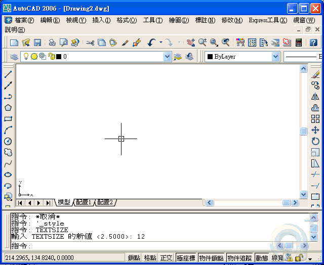

圖面樣板檔包含標準設定
您可以從提供的樣板檔中選取一種，或者建立自己的樣板檔。圖面樣板檔的副檔名為.dwt。
當根據既有的樣板檔建立新圖檔並進行變更時，新圖檔的變更不會影響樣板檔。您可以使用程式提供的其中一個樣板檔，也可以建立您自己的樣板檔。
建立圖面樣板檔
當需要建立數個使用相同慣例與預設設定的圖面時，可以建立或自訂樣板檔，而不是在每次啟動時都指定慣例與預設設定，這樣可以節省一些時間。通常儲存在樣板檔中的慣用法與設定包括
·單位類型與精確度
·標題欄框、邊框與徽標
·圖層名稱
·鎖點、格線與正交設定
·格線限制
·標註型式
·文字型式
·線型
註:依預設，圖面樣板檔儲存在易於存取的「template」資料夾中。
恢復預設圖面樣板檔
如果圖面樣板檔 acad.dwt 或 acadiso.dwt 中設定的原始預設已經變更，您可透過以下方式對其進行重置: 開始不使用樣板的新圖面，然後將圖面儲存為圖面樣板檔，取代 acad.dwt 或 acadiso.dwt。
如果指定「3D 塑型」工作區，則預設圖面樣板檔為 acad3d.dwt 和 acadiso3d.dwt。
透過使用 NEW 來顯示「選取樣板」對話方塊，您可以啟動具有原始預設新圖面。
為此，請按一下「開啟」按鈕旁邊的箭頭，然後按一下清單中其中一個「無樣板」選項。
建立新圖面的快捷方式是從草圖開始，使用預設圖面樣板檔中的設定開始繪製圖面。
NEW 指令或 QNEW 指令
要從草圖開始繪製圖面，可以使用「建立新圖面」對話方塊或「選取樣板」對話方塊，也可以不使用任何對話方塊。
無論選擇哪種方式，都可以使用 NEW 指令或 QNEW 指令。
步驟1：將檔案另存成 樣板檔(STAN.dwt)
步驟2：指定 QNEW 自訂樣板檔位置
